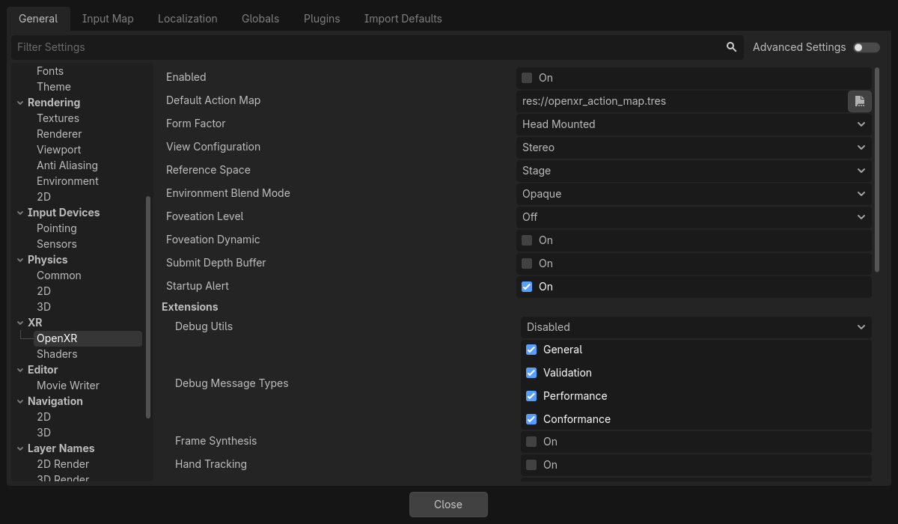
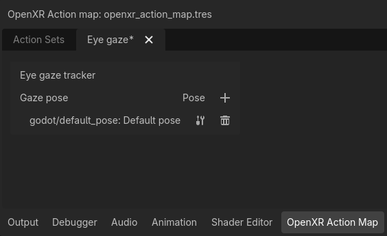

Cài đặt OpenXR
OpenXR có bộ cài đặt riêng được áp dụng khi OpenXR khởi động. Mặc dù các OpenXR extension được hiện thực qua plugin Godot có thể thêm các cài đặt bổ sung, ở đây chúng ta chỉ bàn về các cài đặt trong lõi của Godot.

Cài đặt chung
Enabled
Cài đặt này bật module OpenXR khi Godot khởi động. Điều này là bắt buộc khi dùng backend Vulkan. Với các backend khác, bạn có thể bật OpenXR bất cứ lúc nào bằng cách gọi initialize trên OpenXRInterface.
Cài đặt này cũng cần được bật để truy cập trình chỉnh sửa action map.
Bạn có thể dùng tham số dòng lệnh --xr-mode on để buộc bật cài đặt này.
Default Action Map
Cài đặt này chỉ định đường dẫn tới file action map mà OpenXR sẽ tải và truyền cho XR Runtime.
Form Factor
Cài đặt này chỉ định game của bạn được thiết kế cho:
Thiết bị
Head Mounted(đeo trên đầu) như Meta Quest, Valve Index hoặc Magic Leap,Thiết bị
Handheld(cầm tay) như điện thoại.
Nếu thiết bị chạy game của bạn không khớp với lựa chọn ở đây, OpenXR sẽ khởi tạo thất bại.
View Configuration
Cài đặt này chỉ định cấu hình hiển thị (view configuration) mà game của bạn được thiết kế cho:
Mono, game của bạn xuất ra một hình ảnh duy nhất. Ví dụ: AR trên điện thoại;Stereo, game của bạn xuất ra hình ảnh lập thể (stereo). Ví dụ: thiết bị đeo trên đầu.
Nếu thiết bị chạy game của bạn không khớp với lựa chọn ở đây, OpenXR sẽ khởi tạo thất bại.
Ghi chú
OpenXR còn có các view configuration bổ sung cho những thiết bị rất đặc thù mà Godot chưa hỗ trợ. Chẳng hạn, headset Varjo có cấu hình quad view xuất ra hai bộ hình ảnh stereo. Những cấu hình này có thể sẽ được hỗ trợ trong tương lai gần.
Reference Space
Trong XR, mọi thành phần như đầu và tay của người chơi đều được theo dõi trong một vùng theo dõi (tracking volume). Ở đáy vùng theo dõi này là điểm gốc (origin point), dùng để ánh xạ không gian ảo của chúng ta vào không gian thực. Tuy nhiên, có những tình huống khác nhau đặt điểm này ở các vị trí khác nhau, tùy theo hệ thống XR được sử dụng. Trong OpenXR, các tình huống này được định nghĩa rõ ràng và được chọn bằng cách thiết lập một reference space.
Local
Reference space local mặc định đặt điểm gốc tại vị trí đầu của người chơi. Một số XR runtime sẽ làm điều này mỗi lần game khởi động, số khác sẽ lưu giữ vị trí này qua các phiên.
Tuy nhiên, reference space này không ngăn người dùng đi ra chỗ khác, nên bạn sẽ cần phát hiện điều đó nếu muốn ngăn người dùng rời khỏi phương tiện họ đang điều khiển, vì điều này có thể phá hỏng trải nghiệm game.
Reference space này là lựa chọn tốt nhất cho các game như mô phỏng bay hoặc mô phỏng đua xe, khi chúng ta muốn đặt node XROrigin3D ở vị trí đầu người chơi cần ở.
Khi người dùng kích hoạt tùy chọn căn giữa lại (recenter) trên headset (cách làm khác nhau tùy XR runtime), XR runtime sẽ di chuyển XRCamera3D tới node XROrigin3D. OpenXRInterface cũng sẽ phát signal pose_recentered để game của bạn có thể phản hồi phù hợp.
Ghi chú
Mọi thành phần khác được XR theo dõi như controller hoặc anchor cũng sẽ được điều chỉnh tương ứng.
Cảnh báo
Bạn không nên gọi center_on_hmd khi dùng reference space này.
Stage
Reference space stage là reference space mặc định, đặt điểm gốc ở trung tâm không gian chơi. Với các XR runtime cho phép bạn vẽ ranh giới bảo vệ (guardian boundary), vị trí này và hướng của nó thường do người dùng thiết lập. Các XR runtime khác có thể quyết định vị trí điểm này theo cách khác. Tuy nhiên, đây luôn là một điểm cố định trong thế giới thực.
Reference space này là lựa chọn tốt nhất cho các game room scale, nơi người dùng được kỳ vọng sẽ đi lại trong một không gian lớn hơn, hoặc cho các game cần chuyển đổi giữa các chế độ chơi. Xem Room Scale để biết thêm thông tin.
Khi người dùng kích hoạt tùy chọn căn giữa lại trên headset (cách làm khác nhau tùy XR runtime), XR runtime sẽ không thay đổi điểm gốc. OpenXRInterface sẽ phát signal pose_recentered và game có trách nhiệm phản hồi phù hợp. Nếu không làm vậy, game của bạn có thể không được chấp nhận trên nhiều cửa hàng ứng dụng.
Trong Godot, bạn có thể làm điều này bằng cách gọi hàm center_on_hmd trên XRServer:
Gọi
XRServer.center_on_hmd(XRServer.RESET_BUT_KEEP_TILT, false)sẽ di chuyển node XRCamera3D tới node XROrigin3D, tương tự reference spaceLocal.Gọi
XRServer.center_on_hmd(XRServer.RESET_BUT_KEEP_TILT, true)sẽ di chuyển node XRCamera3D lên phía trên node XROrigin3D và giữ nguyên chiều cao của người chơi, tương tự reference spaceLocal Floor.
Ghi chú
Mọi thành phần khác được XR theo dõi như controller hoặc anchor cũng sẽ được điều chỉnh tương ứng.
Local Floor
Reference space local floor tương tự reference space local ở chỗ nó đặt điểm gốc tại vị trí của người chơi. Tuy nhiên, ở chế độ này chiều cao của người chơi được giữ nguyên. Giống như reference space local, một số XR runtime sẽ lưu giữ vị trí này qua các phiên.
Vì vậy, không có gì đảm bảo người chơi đang đứng tại điểm gốc; điều duy nhất được đảm bảo là họ đã đứng ở đó vào lần cuối người dùng căn giữa lại. Người chơi cũng có thể tự do đi ra chỗ khác.
Reference space này là lựa chọn tốt nhất cho các game mà người dùng được kỳ vọng đứng yên tại một chỗ, hoặc cho các game kiểu AR, nơi các thành phần giao diện của người dùng gắn với node origin và nhanh chóng được đặt tại vị trí người chơi khi căn giữa lại.
Khi người dùng kích hoạt tùy chọn căn giữa lại trên headset (cách làm khác nhau tùy XR runtime), XR runtime sẽ di chuyển XRCamera3D lên phía trên node XROrigin3D nhưng vẫn giữ chiều cao của người chơi. OpenXRInterface cũng sẽ phát signal pose_recentered để game của bạn có thể phản hồi phù hợp.
Cảnh báo
Hãy cẩn thận khi dùng chế độ này kết hợp với việc di chuyển ảo của người chơi. Việc người dùng căn giữa lại trong tình huống này có thể khó lường trừ khi bạn bù trừ chuyển động khi xử lý signal căn giữa lại. Điều này thậm chí có thể phá hỏng game, vì hiệu ứng trong tình huống này là người chơi bị dịch chuyển tức thời tới bất kỳ vị trí trừu tượng nào mà điểm gốc được đặt trong quá trình di chuyển ảo, kể cả khả năng người chơi dịch chuyển vào những vị trí lẽ ra bị cấm. Trong tình huống này, tốt hơn nên dùng chế độ Stage và chỉ giới hạn việc đặt lại hướng khi nhận được signal pose_recentered.
Ghi chú
Mọi thành phần khác được XR theo dõi như controller hoặc anchor cũng sẽ được điều chỉnh tương ứng.
Cảnh báo
Bạn không nên gọi center_on_hmd khi dùng reference space này.
Environment Blend Mode
Environment blend mode xác định cách đầu ra kết xuất của chúng ta được hòa trộn vào "thế giới thực", với điều kiện headset hỗ trợ tính năng này.
Opaquenghĩa là đầu ra che khuất thế giới thực, chúng ta đang ở chế độ VR.Additivenghĩa là đầu ra được cộng thêm vào thế giới thực, đây là chế độ AR mà quang học không cho phép che khuất hoàn toàn thế giới thực (ví dụ: Hololens),Alphanghĩa là đầu ra được hòa trộn với thế giới thực bằng kênh alpha (viewport cần bật nền trong suốt), đây là chế độ AR mà quang học có thể che khuất hoàn toàn thế giới thực (Magic Leap, mọi thiết bị passthrough, v.v.).
Nếu chọn một chế độ mà headset không hỗ trợ, chế độ khả dụng đầu tiên sẽ được chọn.
Ghi chú
Một số thiết bị OpenXR có hệ thống riêng để bật/tắt passthrough. Từ Godot 4.3 trở đi, chọn chế độ alpha blend cũng sẽ thực hiện các bước bổ sung này. Điều này yêu cầu cài đặt plugin mới nhất của nhà cung cấp.
Foveation Level
Thiết lập mức foveation dùng khi kết xuất, với điều kiện phần cứng đang dùng hỗ trợ tính năng này. Foveation là kỹ thuật trong đó nội dung được kết xuất càng xa trung tâm viewport thì độ phân giải kết xuất càng thấp. Hầu hết XR runtime chỉ hỗ trợ fixed foveation, nhưng một số sẽ tính đến theo dõi mắt (eye tracking) và dùng điểm tiêu cự cho hiệu ứng này.
Mức càng cao thì hiệu năng càng được cải thiện, nhưng chất lượng ở vùng nhìn ngoại vi của người dùng cũng càng giảm.
Ghi chú
Chỉ dành cho renderer Compatibility; với renderer Mobile và Forward+, hãy đặt thuộc tính vrs_mode trên Viewport thành VRS_XR.
Cảnh báo
Tính năng này bị tắt nếu dùng các hiệu ứng hậu kỳ như glow, bloom hoặc DOF.
Foveation Dynamic
Khi được bật, mức foveation sẽ tự động điều chỉnh tùy theo tải GPU hiện tại. Mức này được điều chỉnh trong khoảng từ thấp đến mức foveation đã chọn ở cài đặt trước. Vì vậy, tốt nhất nên kết hợp cài đặt này với foveation level đặt ở mức cao.
Ghi chú
Chỉ dành cho renderer Compatibility
Submit Depth Buffer
Nếu được bật, một depth buffer do OpenXR cung cấp sẽ được dùng khi kết xuất và được gửi kèm theo hình ảnh đã kết xuất. XR runtime có thể dùng nó để cải thiện reprojection.
Ghi chú
Bật tính năng này sẽ tắt hỗ trợ stencil trong quá trình kết xuất. Không nhiều XR runtime tận dụng tính năng này, nên khuyến nghị để tắt cài đặt này trừ khi nó mang lại lợi ích rõ rệt cho trường hợp sử dụng của bạn.
Startup Alert
Nếu được bật, một thông báo cảnh báo sẽ hiển thị cho người dùng khi OpenXR khởi động thất bại. Không phải lúc nào chúng ta cũng nhận được phản hồi từ hệ thống XR về lý do khởi động thất bại. Nếu có, chúng ta sẽ ghi lý do đó vào console. Các nguyên nhân thất bại phổ biến là:
Chưa cài OpenXR runtime nào trên hệ thống máy chủ.
OpenXR runtime WMR của Microsoft đang hoạt động; runtime này chỉ hỗ trợ DirectX và sẽ thất bại nếu dùng OpenGL hoặc Vulkan.
Đang dùng SteamVR nhưng chưa kết nối/bật headset nào.
Hãy tắt cài đặt này nếu game của bạn hỗ trợ chế độ dự phòng để có thể chơi ở chế độ desktop khi không kết nối headset VR, hoặc nếu bạn tự xử lý trường hợp thất bại bằng cách kiểm tra OpenXRInterface.is_initialized().
Extension
Mục con này cho phép bạn bật nhiều OpenXR extension tùy chọn khác nhau. Lưu ý rằng các extension chỉ hoạt động nếu OpenXR runtime (SteamVR, Oculus, v.v.) mà dự án chạy trên đó hỗ trợ chúng.
Debug Utils
Bật cài đặt này sẽ ghi log các thông báo debug từ XR runtime.
Debug Message Types
Cài đặt này cho phép bạn chọn những loại thông báo debug nào được ghi log.
Frame Synthesis
Khi được bật, nếu XR runtime hỗ trợ, các buffer motion vector và depth có độ phân giải thấp hơn sẽ được kết xuất và cung cấp cho XR runtime. Khi đó XR runtime có thể chèn các frame reprojection và bù đắp cho tốc độ khung hình thấp hơn.
Hiện tại tính năng này có các giới hạn sau:
KHÔNG hoạt động với renderer Forward+.
Chỉ hoạt động với kết xuất stereo.
Hand Tracking
Tùy chọn này bật extension hand tracking (theo dõi bàn tay) khi thiết bị đang dùng hỗ trợ. Tùy chọn này được bật mặc định vì lý do tương thích ngược. Extension hand tracking cung cấp dữ liệu cho phép bạn hiển thị bàn tay của người dùng với vị trí ngón tay chính xác. Tùy theo khả năng của nền tảng, dữ liệu hand tracking có thể được suy ra từ đầu vào của controller, đến từ găng tay dữ liệu, từ cảm biến theo dõi bàn tay quang học hoặc bất kỳ nguồn phù hợp nào khác.
Nếu game của bạn chỉ hỗ trợ controller thì nên tắt tùy chọn này.
Xem trang về hand tracking để biết thêm chi tiết.
Hand Tracking Unobstructed Data Source
Bật tùy chọn này nghĩa là hand tracking có thể dùng vị trí chính xác của các ngón tay, thường là những gì camera của headset nhìn thấy.
Hand Tracking Controller Data Source
Bật tùy chọn này nghĩa là hand tracking có thể dùng chính controller, và suy ra vị trí các ngón tay dựa trên đầu vào của controller hoặc các cảm biến trên controller.
Hand Interaction Profile
Bật extension này cho phép sử dụng hai pose hand tracking mới. Pose pinch là vị trí giữa ngón cái và ngón trỏ, hướng về phía trước, và pose poke nằm ở đầu ngón trỏ.
Extension này còn cho phép thêm 3 đầu vào dựa trên cử chỉ. Pinch, khi người dùng chụm ngón cái và ngón trỏ lại với nhau. Aim activation, khi ngón trỏ duỗi thẳng hoàn toàn. Và Grasp, khi người dùng nắm tay lại.
Khi cung cấp cả hand interaction profile và controller interaction profile, runtime sẽ chuyển đổi giữa các profile tùy theo việc đang dùng theo dõi quang học hay người dùng đang cầm controller.
Nếu chỉ cung cấp hand interaction profile, mọi runtime đều nên dùng hand interaction ngay cả khi người dùng đang cầm controller.
Spatial Entities
Extension này và các cài đặt của nó được dùng để lấy và tương tác với thông tin về môi trường thực tế của người dùng. Bạn có thể tìm thông tin chi tiết hơn về cách hoạt động của nó trên trang spatial entities.
Eye Gaze Interaction
Tùy chọn này bật extension eye gaze interaction (tương tác bằng ánh mắt) khi thiết bị đang dùng hỗ trợ. Khi được bật, chúng ta sẽ nhận phản hồi từ eye tracking thông qua một pose nằm giữa hai mắt người dùng, hướng theo hướng người dùng đang nhìn. Đây sẽ là một hướng thống nhất.
Để sử dụng tính năng này, bạn cần chỉnh sửa action map và thêm một pose action mới, ví dụ eye_pose. Sau đó thêm một interaction profile mới cho eye gaze interaction và ánh xạ eye_pose:

Đừng quên lưu lại!
Tiếp theo, thêm một node XRController3D mới vào node origin, đặt thuộc tính tracker của nó thành /user/eyes_ext và thuộc tính pose thành eye_pose.
Giờ bạn có thể thêm các thứ vào node controller này, chẳng hạn một raycast, và điều khiển mọi thứ bằng mắt.
Render Models
Extension này được dùng để truy vấn XR runtime lấy các asset 3D của phần cứng đang được sử dụng, thường là controller, cũng như vị trí của phần cứng đó. Bạn có thể tìm hướng dẫn chi tiết về cách sử dụng nó tại đây.
Binding Modifiers
Các tùy chọn này quyết định có được dùng binding modifier hay không. Binding modifier được dùng để áp dụng ngưỡng hoặc giá trị offset. Bạn có thể tìm thông tin về cách sử dụng và thiết lập chúng trên trang XR action map tại đây.
Analog Threshold
Cho phép binding modifier ngưỡng analog.
Dpad Binding
Cho phép binding modifier D-pad.